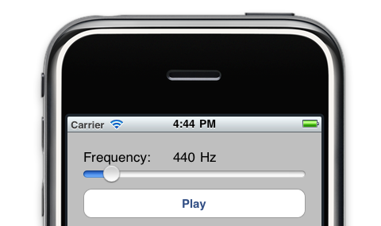

Please note: this article is part of the older "Objective-C era" on Cocoa with Love. I don't keep these articles up-to-date; please be wary of broken code or potentially out-of-date information. Read "A new era for Cocoa with Love" for more.
An iOS tone generator (an introduction to AudioUnits)
In this post, I present a tiny iOS app that generates a continuous tone at a frequency determined by a slider. It's a small sample app intended to show the simplest way to send audio data you generate to the speaker.
Introduction
I've previously written posts on playing audio from MP3/AAC files and streams. These posts use the AudioQueue API to play audio. The AudioQueue interface can take audio data — still in compressed formats — and play it on the device output. This decoding/decompressing is the key strength of the AudioQueue APIs and it is the only way to take advantage of the hardware decoding on iOS devices.
However, if you're generating your own audio (and it is therefore already decompressed, linear PCM) you don't need to use AudioQueue. You can still play audio in this format using AudioQueue but the reality is that you'll have more control and be able to do much more if you use the lowest level audio API (lowest in iOS, anyway): the AudioUnit.
Sample application: ToneGenerator
The sample application for this post is really simple: a slider to control frequency and a play button.
The tone is generated continuously while you change the frequency so you can play with the tone generator like a slide whistle for hours of neighbour-annoying fun.
You can download the ToneGenerator and the complete sample project used in this post here ToneGenerator.zip (25kb)Audio Units
AudioUnits are lowest level of sound generation on iOS and the lowest hardware abstracted layer commonly used on the Mac. They generate raw audio samples when requested and place them into output buffers. That's their entire function.
An AudioUnit generates these samples in its render function. The render function is invoked to generate samples on a dedicated audio thread.
In an effort to keep the code as focussed as possible on the basics of AudioUnits, I will be showing you how to create a single AudioUnit and use it on its own to output sound. Ordinarily though, AudioUnits are used as part of an AUGraph which chains a few different units together for feeding in sound data, mixing, effects and other purposes. Perhaps I'll show more about that in a future post but for now, the aim is to keep it simple.
Generating your own audio samples
Generating audio samples means that we must calculate the values of an audio waveform at the required time locations (sample points).
In this sample application, we're going to use 32-bit floating point values for each sample (since that's the easiest). This is for convenience, it's not the best format for performance on iOS — that would be the canonical sample format of 8.24 signed, fixed-point samples (that's 32-bits per sample with 24 bits of that used as the fractional component). But convenience is more important than raw efficiency in this sample application so floats are good enough.
The values can vary between -1.0 and +1.0 but we're going to limit our samples to a smaller range than that to keep the volume to a reasonable level.
Our generated tone is a basic sine wave (a pure tone). The value at each sample point will then be determined by the following equation:
f(n) = a sin ( θ(n) )
where n is the index of the current sample, a is the amplitude and the current angle of the waveform, θ(n) is given by:
θ(n) = 2πƒ n / r
where ƒ is the frequency of the tone we want to generate and r is the sample rate of the audio we're generating.
Implementing this in our AudioUnit's render function, gives us a function that looks like this:
OSStatus RenderTone(
void *inRefCon,
AudioUnitRenderActionFlags *ioActionFlags,
const AudioTimeStamp *inTimeStamp,
UInt32 inBusNumber,
UInt32 inNumberFrames,
AudioBufferList *ioData)
{
// Fixed amplitude is good enough for our purposes
const double amplitude = 0.25;
// Get the tone parameters out of the view controller
ToneGeneratorViewController *viewController =
(ToneGeneratorViewController *)inRefCon;
double theta = viewController->theta;
double theta_increment =
2.0 * M_PI * viewController->frequency / viewController->sampleRate;
// This is a mono tone generator so we only need the first buffer
const int channel = 0;
Float32 *buffer = (Float32 *)ioData->mBuffers[channel].mData;
// Generate the samples
for (UInt32 frame = 0; frame < inNumberFrames; frame++)
{
buffer[frame] = sin(theta) * amplitude;
theta += theta_increment;
if (theta > 2.0 * M_PI)
{
theta -= 2.0 * M_PI;
}
}
// Store the updated theta back in the view controller
viewController->theta = theta;
return noErr;
}Creating an AudioUnit for outputting audio
AudioUnit is a low-level API, so there are many settings you can configure — and you have to configure a lot of them to get playback to work at all. Fortunately, it's all pretty straightforward.
Here's the code to create and configure an output audio unit (toneUnit) for playing 32 bit, single channel, floating point, linear PCM sound that generates its audio using the function RenderTone.
// Configure the search parameters to find the default playback output unit
// (called the kAudioUnitSubType_RemoteIO on iOS but
// kAudioUnitSubType_DefaultOutput on Mac OS X)
AudioComponentDescription defaultOutputDescription;
defaultOutputDescription.componentType = kAudioUnitType_Output;
defaultOutputDescription.componentSubType = kAudioUnitSubType_RemoteIO;
defaultOutputDescription.componentManufacturer = kAudioUnitManufacturer_Apple;
defaultOutputDescription.componentFlags = 0;
defaultOutputDescription.componentFlagsMask = 0;
// Get the default playback output unit
AudioComponent defaultOutput = AudioComponentFindNext(NULL, &defaultOutputDescription);
NSAssert(defaultOutput, @"Can't find default output");
// Create a new unit based on this that we'll use for output
OSErr err = AudioComponentInstanceNew(defaultOutput, &toneUnit);
NSAssert1(toneUnit, @"Error creating unit: %ld", err);
// Set our tone rendering function on the unit
AURenderCallbackStruct input;
input.inputProc = RenderTone;
input.inputProcRefCon = self;
err = AudioUnitSetProperty(toneUnit,
kAudioUnitProperty_SetRenderCallback,
kAudioUnitScope_Input,
0,
&input,
sizeof(input));
NSAssert1(err == noErr, @"Error setting callback: %ld", err);
// Set the format to 32 bit, single channel, floating point, linear PCM
const int four_bytes_per_float = 4;
const int eight_bits_per_byte = 8;
AudioStreamBasicDescription streamFormat;
streamFormat.mSampleRate = sampleRate;
streamFormat.mFormatID = kAudioFormatLinearPCM;
streamFormat.mFormatFlags =
kAudioFormatFlagsNativeFloatPacked | kAudioFormatFlagIsNonInterleaved;
streamFormat.mBytesPerPacket = four_bytes_per_float;
streamFormat.mFramesPerPacket = 1;
streamFormat.mBytesPerFrame = four_bytes_per_float;
streamFormat.mChannelsPerFrame = 1;
streamFormat.mBitsPerChannel = four_bytes_per_float * eight_bits_per_byte;
err = AudioUnitSetProperty (toneUnit,
kAudioUnitProperty_StreamFormat,
kAudioUnitScope_Input,
0,
&streamFormat,
sizeof(AudioStreamBasicDescription));
NSAssert1(err == noErr, @"Error setting stream format: %ld", err);Start it playing
Once you've got an output AudioUnit created, you need to initialize it using AudioUnitInitialize (which verifies that all the parameters are valid) and then you can start it running using AudioOutputUnitStart. Once an AudioUnit is initialized, you can't change further parameters, so if you need to change parameters again, you'll need to use AudioUnitUninitialize.
In the sample program, toggling playback performs a full teardown and recreation of the AudioUnit as follows:
- (IBAction)togglePlay:(UIButton *)selectedButton
{
if (!toneUnit)
{
// Create the audio unit as shown above
[self createToneUnit];
// Finalize parameters on the unit
OSErr err = AudioUnitInitialize(toneUnit);
NSAssert1(err == noErr, @"Error initializing unit: %ld", err);
// Start playback
err = AudioOutputUnitStart(toneUnit);
NSAssert1(err == noErr, @"Error starting unit: %ld", err);
[selectedButton setTitle:NSLocalizedString(@"Stop", nil) forState:0];
}
else
{
// Tear it down in reverse
AudioOutputUnitStop(toneUnit);
AudioUnitUninitialize(toneUnit);
AudioComponentInstanceDispose(toneUnit);
toneUnit = nil;
[selectedButton setTitle:NSLocalizedString(@"Play", nil) forState:0];
}
}Conclusion
You can download the ToneGenerator and the complete sample project used in this post here ToneGenerator.zip (25kb)The aim in this post was to present a sample iOS application that shows AudioUnits in the simplest way possible. Most of the Apple sample projects are considerably more elaborate, involve complex AUGraphs or can't be used on iOS because they use Mac-only APIs.
However, this sample application is a little atypical because of this simplification. In more complex applications, you'll probably want an AUGraph to chain an input node fed from a file, possibly a mixer and effects nodes, then an output node together.
Testing if an arbitrary pointer is a valid object pointer